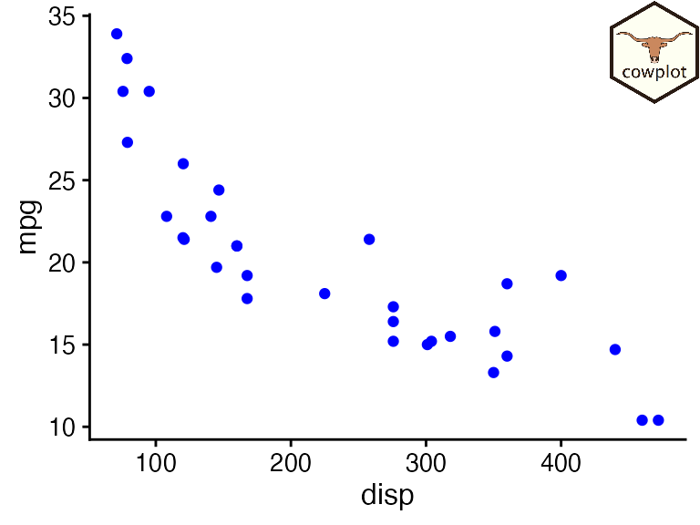

Introduction to cowplot
Claus O. Wilke
2023-12-14
Source:vignettes/introduction.Rmd
introduction.RmdThe cowplot package is a simple add-on to ggplot. It provides various features that help with creating publication-quality figures, such as a set of themes, functions to align plots and arrange them into complex compound figures, and functions that make it easy to annotate plots and or mix plots with images. The package was originally written for internal use in my lab, to provide my students and postdocs with the tools to make high-quality figures for their publications. I have also used the package extensively in my book Fundamentals of Data Visualization. This introductory vignette provides a brief glance at the key features of the package.
For more complete documentation, read all vignettes and/or the reference documentation.
Themes
When I first wrote the cowplot package, its primary purpose was to
provide a simple and clean theme, similar to ggplot2’s
theme_classic(). Therefore, I wrote the package to
automatically load the theme. However, as the package grew in
functionality, this choice was increasingly problematic, and therefore
as of version 1.0 cowplot does not alter the default ggplot2 theme
anymore.
Importantly, the cowplot package now provides a set of complementary themes with different features. I now believe that there isn’t one single theme that works for all figures, and therefore I recommend that you always explicitly set a theme for every plot you make.
library(ggplot2)
library(cowplot)
# default ggplot2 theme
ggplot(iris, aes(Sepal.Length, Sepal.Width, color = Species)) +
geom_point()
# classic cowplot theme
ggplot(iris, aes(Sepal.Length, Sepal.Width, color = Species)) +
geom_point() +
theme_cowplot(12)
# minimal grid theme
ggplot(iris, aes(Sepal.Length, Sepal.Width, color = Species)) +
geom_point() +
theme_minimal_grid(12)
# minimal horizontal grid theme
ggplot(iris, aes(Sepal.Length, fill = Species)) +
geom_density(alpha = 0.5) +
scale_y_continuous(expand = expansion(mult = c(0, 0.05))) +
theme_minimal_hgrid(12)However, if you have existing code that depends on the old cowplot
behavior, you can call theme_set(theme_cowplot()) at the
top of your script to change the theme globally.
Arranging plots into a grid
The cowplot package provides the function plot_grid() to
arrange plots into a grid and label them.
p1 <- ggplot(mtcars, aes(disp, mpg)) +
geom_point()
p2 <- ggplot(mtcars, aes(qsec, mpg)) +
geom_point()
plot_grid(p1, p2, labels = c('A', 'B'), label_size = 12)
While plot_grid() was originally written for ggplot2, it
also supports other plotting frameworks, such as base graphics.

Generic plot annotations
The plot_grid() is built on top of a generic drawing
layer that allows us to capture plots as images and then draw with them
or on top of them.
p <- ggplot(mtcars, aes(disp, mpg)) +
geom_point(size = 1.5, color = "blue") +
theme_cowplot(12)
logo_file <- system.file("extdata", "logo.png", package = "cowplot")
ggdraw(p) +
draw_image(logo_file, x = 1, y = 1, hjust = 1, vjust = 1, width = 0.13, height = 0.2)
Here, ggdraw() takes a snapshot of the plot and places
it at full size into a new drawing canvas. The function
draw_image() then draws an image on top of the plot.
To create a watermark, we can reverse the order by first setting up an empty drawing canvas, then drawing the image, and then drawing the plot on top.
ggdraw() +
draw_image(logo_file, scale = 0.5) +
draw_plot(p)